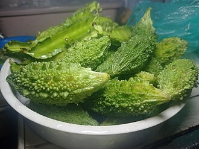

ゴーヤの生産量 都道府県ランキング
全34県の順位と、とれた量
ゴーヤが日本でいちばん多くとれるのは沖縄県です。5,460 tで、全国（1万5,200 t）の36%を占めます。

| 順位 | 都道府県 | 収穫量 | 全国に占める割合 |
|---|---|---|---|
| 1位 | 沖縄県 | 5,460 t | 36% |
| 2位 | 群馬県 | 2,230 t | 15% |
| 3位 | 宮崎県 | 2,180 t | 14% |
| 4位 | 鹿児島県 | 1,610 t | 11% |
| 5位 | 長崎県 | 1,030 t | 6.8% |
| 6位 | 熊本県 | 641 t | 4.2% |
| 7位 | 茨城県 | 542 t | 3.6% |
| 8位 | 栃木県 | 289 t | 1.9% |
| 9位 | 和歌山県 | 180 t | 1.2% |
| 10位 | 福岡県 | 176 t | 1.2% |
| 11位 | 大分県 | 174 t | 1.1% |
| 12位 | 高知県 | 161 t | 1.1% |
| 13位 | 埼玉県 | 82 t | 0.5% |
| 14位 | 佐賀県 | 76 t | 0.5% |
| 15位 | 福島県 | 65 t | 0.4% |
| 16位 | 愛知県 | 61 t | 0.4% |
| 17位 | 神奈川県 | 55 t | 0.4% |
| 18位 | 大阪府 | 49 t | 0.3% |
| 19位 | 千葉県 | 30 t | 0.2% |
| 20位 | 新潟県 | 26 t | 0.2% |
| 21位 | 愛媛県 | 21 t | 0.1% |
| 22位 | 兵庫県 | 20 t | 0.1% |
| 23位 | 静岡県 | 9 t | 0.1% |
| 24位 | 北海道 | 6 t | 0.0% |
| 25位 | 山梨県 | 6 t | 0.0% |
| 26位 | 滋賀県 | 4 t | 0.0% |
| 27位 | 岡山県 | 4 t | 0.0% |
| 28位 | 京都府 | 3 t | 0.0% |
| 29位 | 香川県 | 3 t | 0.0% |
| 30位 | 岐阜県 | 2 t | 0.0% |
| 31位 | 宮城県 | 1 t | 0.0% |
| 32位 | 長野県 | 1 t | 0.0% |
| 33位 | 島根県 | 1 t | 0.0% |
| 34位 | 広島県 | 1 t | 0.0% |
この数字について
- 分類：ウリ科
- 全国の収穫量：1万5,200 t
- この数字が表すもの：収穫量（畑や田でとれた重さ）
- 調査：地域特産野菜生産状況調査 令和6年産
- 34県分を調査（調査していない県は順位に入りません）
ゴーヤの生産量について、よくある質問
- ゴーヤの生産量が日本一の都道府県はどこですか？
- 沖縄県です。地域特産野菜生産状況調査（令和6年産）で5,460 tでした。
- ゴーヤの生産量ランキング2位・3位はどこですか？
- 2位は群馬県（2,230 t）、3位は宮崎県（2,180 t）です。
- ゴーヤの生産量ランキング4位・5位はどこですか？
- 4位は鹿児島県（1,610 t）、5位は長崎県（1,030 t）です。ゴーヤの全34県の順位は上の表のとおりです。
- ゴーヤの全国の生産量はどれくらいですか？
- 1万5,200 t（令和6年産）です。